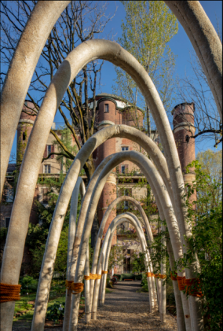

Description
Part 1 Background
Noise will affect people's normal work and sleep quality, increase psychological pressure, reduce work efficiency and learning effect. However, soundproofing in many apartments and hotels is not always satisfactory. Furthermore, as society develops, noise has been contributing to the increasing number of people sufferring from neurasthenia, sleeplessness, and all kinds of nervous system disorder all over the globe.
Even though many sound-proof materials have been manufactured and used nowadays, we still notice several drawbacks among these materials.
1.The existing soundproofing materials are relatively expensive.
2.The fire resistance performance is not ideal, such as the poor flame retardancy of soundproof walls made of acoustic cotton materials.
3.The sound absorption effect is poor. Due to the limitations of the current structure of sound-absorbing materials, they have limited absorption capability for low-frequency sounds or sounds close to their resonant frequencies. For instance, they struggle to eliminate noises from appliances, footsteps from slippers, or vibrations from neighboring floors.
4.Detrimental to human health. Most affordable soundproofing materials in the market fail to meet environmental standards and may contain harmful chemical additives such as plasticizers during the production process. They often have unpleasant odors and are non-biodegradable. Additionally, soundproof cotton is made from asbestos, with fine fibers that can cause a range of lung diseases if inhaled.
Part 2 Inspirations on our project
Since the beginning of the 21st century, building energy consumption has accounted for nearly 40% of the total energy consumption in society. Among them, a significant proportion is attributed to the energy consumption during the production of building materials. The extensive use of fossil fuels and non-biodegradable materials has led to increased environmental and social costs, as well as issues such as resource depletion and landfill waste. To address the environmental impact of non-biodegradable construction materials, finding biodegradable alternatives has become an important avenue to explore. Mycelium-based composite materials are one such type of bio-based material. They are created by combining mycelium with agricultural and forestry waste to form a dense network structure, which is then processed and synthesized. Mycelium-based composites offer excellent insulation, thermal retention, and soundproofing properties, thanks to their porous structure.
Fig.1 Building panels made from mycelium exhibit excellent insulation properties.
Fig.2 Carlo Ratti Associati, in collaboration with energy company Eni, has developed a mushroom-based architectural structure showcased during Milan Design Week. Called "Circular Garden," it consists of a series of arches made from mycelium, spanning a total length of one kilometer.
However, mycelium-based materials typically have a loose and porous internal structure, lacking sufficient load-bearing strength. Therefore, they cannot be used as load-bearing or infill walls for houses, significantly limiting the application space and industrial value prospects of mycelium-based construction materials. This constraint prevents them from becoming industrialized building materials and being produced on a large scale.
Part 3 Our Solution
Inspired by mycelium-based construction materials, we are determined to utilize chitinous fungi to create a wall that possesses high stability, strong load-bearing capacity, fire resistance, insulation, and excellent soundproofing and noise reduction performance. This aims to fill the gap where bio-based materials cannot be applied in the industrial construction sector.
To enhance the load-bearing capacity of our materials, we have decided to incorporate bacterial silicification. The photovoltaic and semiconductor industries require a significant amount of monocrystalline silicon, which generates a large amount of byproduct, namely silicon tetrachloride, during its production process. Silicon tetrachloride is a toxic gas commonly used in the reaction with ethanol to produce tetraethyl orthosilicate (TEOS). In our project, we utilize TEOS for the silicification of bacteria. In summary, this project not only brings innovation to soundproofing materials and generates economic benefits but also promotes the recycling of industrial byproducts, contributing to environmental protection and sustainable development.
We will approach the transformation of our bacteria to achieve the ultimate goal through the following three aspects:
1.Filamentization: The previous igem team (Team: Newcastle 2010) achieved varying degrees of filamentation of Bacillus subtilis by expressing the YneA gene to varying degrees. In addition, it has been reported in Escherichia coli that overexpression of the SulA gene can be used for filamentation.[1]
2.Cross-linking: We have screened igem projects similar to ours in the past ten years, and found that most of the previous teams adopted natural cross-linking methods, and did not design a cross-linking structure at the micro level. In the process of querying the literature, we found a paper that designed the cross-linking structure on the microscopic level. They used Bacillus subtilis and proteins SpyTag, SpyCatcher and EutM to design a cross-linking method between bacteria and proteins, and obtained a gel-like material.[2]
3.Silication: The previous igem team (USAFA iGEM 2022) used Silicatein for silicification. In the process of literature search, we found that Silaffin-R5 can also be used for silicification, and some literature clearly stated that using Silaffin-R5 for silicification can obtain solid silicon particles.[3] In addition, the sequence of Silaffin-R5 has been adjusted in the literature, and various variants with different silicidation effects and efficiencies have been obtained.[4]
Through bacterial filamentization, cross-linking, and silication, we aim to achieve the desired results as illustrated in the following diagram.
The skeleton of a three-dimensional structure serves as the raw material for producing our wall materials.
Part 4 References
[1] A. D. Vedyaykin, A. V. Sabantsev, I. E. Vishnyakov, N. E. Morozova and M. A. Khodorkovskii，Recovery of Division Process in Bacterial Cells After Induction of Sula Protein Which is Responsible for Cytokinesis Arrest During Sos-Response，Cell and Tissue Biology，2017，11(2)：89-94
[2] Sun-Young Kang, Anaya Pokhrel, Sara Bratsch, Joey J. Benson, Seung-Oh Seo, Maureen B. Quin, Alptekin Aksan and Claudia Schmidt-Dannert，Engineering Bacillus Subtilis for the Formation of a Durable Living Biocomposite Material，Nature Communications，2021，12(1)：7133
[3] H. Ping, L. Poudel, H. Xie, W. Fang, Z. Zou, P. Zhai, W. Wagermaier, P. Fratzl, W. Wang, H. Wang, P. O'Reilly, W. Y. Ching and Z. Fu，Synthesis of Monodisperse Rod-Shaped Silica Particles through Biotemplating of Surface-Functionalized Bacteria，Nanoscale，2020，12(16)：8732-8741
[4] Carolin C. Lechner and Christian F. W. Becker，A Sequence-Function Analysis of the Silica Precipitating Silaffin R5 Peptide，Journal of Peptide Science，2014，20(2)：152-158